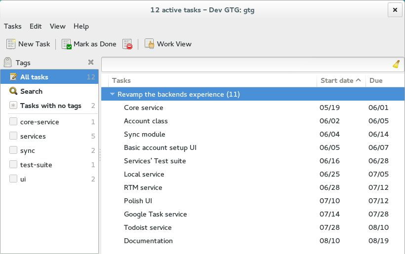
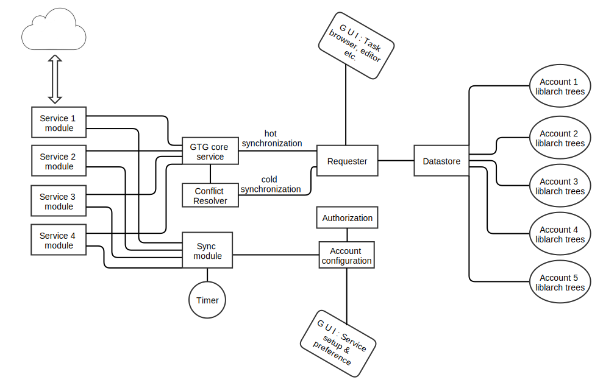
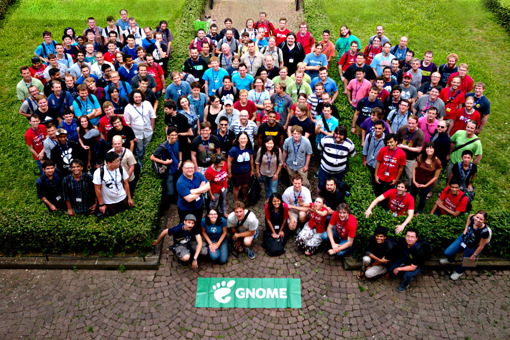

Problems
- Integrating with online services was heavily dependent on core app
- Broken online service support after Python 3 port
- Different types of online service unsupported
- NO support for different nested tasks' implementation
Major tasks
- Stripped down the backend as core service to act on API calls from services
- Revamped the sync engine, to handle different types of services
- Created 4 services
- Tests!!!

GTG Tasks
Modular implementation
Core Service
- Exposes operations to services to modify its liblarch tree of tasks (datastore) & that of tags (tagstore)
- Existing generic backend code concerning datastore and tagstore was reused
Sync module now handles
| Type | Read/Write to liblarch tree | Syncs | Syncs interval |
|---|---|---|---|
| Local service (local XML database & evolution) | Both read & write | Both ways | Immediate |
| Synchronization service | Both read & write | Both ways | Every X (>0) minutes or on request |
| Import | Both read & write | Only from online service | Every X (>0) minutes or on request |
| Read only service | Only read | Only from online service | Every X (>0) minutes or on request |
Sync module
- Summons the specific service, at specific interval specified by each instance of account
- These methods then calls the basic core service (GTG API) to modify its librach trees through requester
- Several helper methods were reused for handling pickle file & services connection
Technologies used


This talk
was first presented
at
Strasbourg, France
was first presented
at
Strasbourg, France

Use a spacebar or arrow keys to navigate